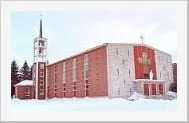
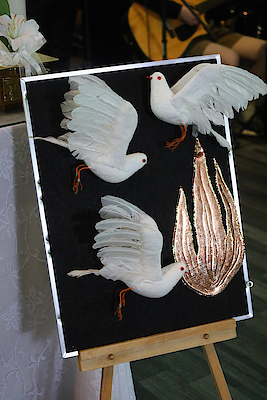

Sise en la ville de Senneterre (Québec, Canada), l’église actuelle a été construite en 1960, selon les plans de l’architecte Jean-Charles Fortin, de St-Lambert (Comté de Chambly, Qc). Inaugurée le 25 décembre 1960, elle a été bénite le 25 juin 1961, par Mgr Albert Sanschagrin, o.m.i., Administrateur Apostolique.
Dernière mise à jour : le 16 mai 2024
Webmestre : Christian Bélisle

Photo: C. Bélisle (2023)
Photo: C. Bélisle (2023)
© 2024 Christian Bélisle